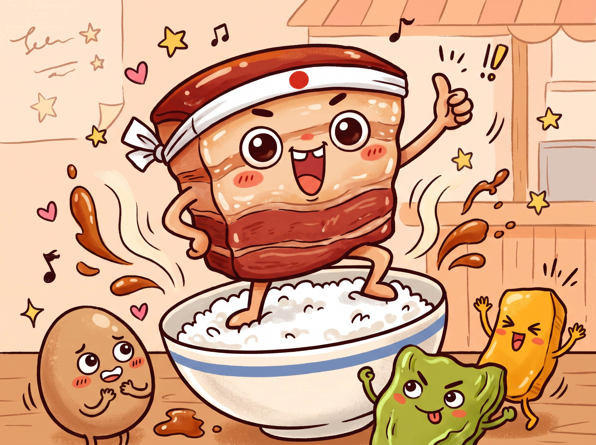
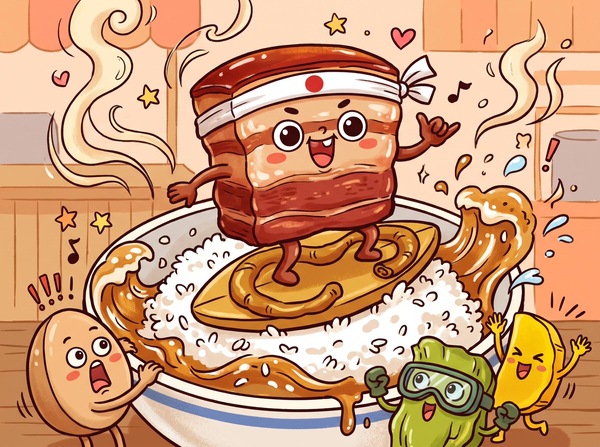

自我的介紹
隆重介紹小吃界的「曼哈頓教主」－控肉！這塊穿著焦糖色外衣的三層肉，畢生都在追求完美的黃金比例：個別的豬皮要像果凍般Q彈閃亮，中間的油花負責入口即化，底層的瘦肉則濃縮吸飽醬汁精華。 每天，控肉們都會在老滷汁溫泉裡做SPA，用八角和冰糖保養著水嫩肌膚。當它被夾起時，在熱騰騰的白飯山尖時穩定駐足，將使出終極必殺技“療愈休止波”，沐浴出讓人瞬間清醒的鹹甜魔法。 千萬要小心！這隻軟萌的「白飯小偷」，絕對不會留情地清空你的飯碗，讓你徹底把減肥拋在腦後，順便在體重計上留下甜蜜的「愛的印記」喔！

隆重介紹小吃界的「曼哈頓教主」－控肉！這塊穿著焦糖色外衣的三層肉，畢生都在追求完美的黃金比例：個別的豬皮要像果凍般Q彈閃亮，中間的油花負責入口即化，底層的瘦肉則濃縮吸飽醬汁精華。 每天，控肉們都會在老滷汁溫泉裡做SPA，用八角和冰糖保養著水嫩肌膚。當它被夾起時，在熱騰騰的白飯山尖時穩定駐足，將使出終極必殺技“療愈休止波”，沐浴出讓人瞬間清醒的鹹甜魔法。 千萬要小心！這隻軟萌的「白飯小偷」，絕對不會留情地清空你的飯碗，讓你徹底把減肥拋在腦後，順便在體重計上留下甜蜜的「愛的印記」喔！

在美食界的相親大會上，胖嘟嘟的「控肉」與自帶爭議體質的「香菜」，絕對是最戲劇化的靈魂搭檔！ 當油亮亮、攜帶「毛髮」的控肉在白飯上穩穩駐足，正準備用暈染暈暈的客人時，頂著一頭翠綠捲髮的「香菜精靈」俱樂部空華麗降！ 「嘿，胖子，你太油了！」香菜傲嬌地趴在控肉的Q彈皮豬上。 「你懂什麼，這叫幸福的油脂！」控肉雖然嘴硬，卻超愛香菜帶來的清新解膩感。 這對歡喜冤家嘴裡一拍即合，香菜的狂野香氣完美中和了控肉的罪惡感，讓人忍不住猛扒飯。不過，可愛的神仙眷情侶的恩愛秀觀眾卻很挑的——畢竟對「反香菜聯盟」的客人來說，這根本就是一場華麗的綠色生化危機呢！